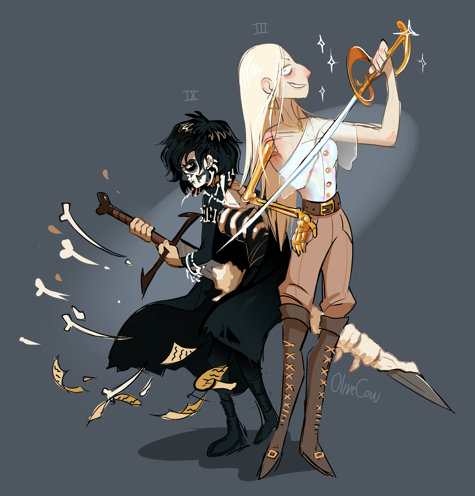

Je me suis lancé dans Harrow la Neuvième environ deux ans et demi après Gideon la Neuvième, qui m’avait laissé un souvenir de lecture chelou mais très fun. Ce fut là ma première erreur. Avant d’entamer ce second tome du cycle du Tombeau scellé, il est en effet nécessaire d’être bien préparé. Après une petite centaine de page, s’est ainsi posée la question de l’abandon pur et simple. A la place, j’ai parcouru quelques discussions sur Reddit (je ne suis pas le seul à avoir envisagé de balancer le livre par la fenêtre) et lu un résumé complet du premier tome pour me raffraîchir la mémoire. Si cela n’a pas suffi à éclairer ma lanterne, ces recherches m’ont au moins convaincu de ne pas lâcher l’affaire immédiatement.
Au début du roman, nous sommes avec Harrowhark Nonagesimus, dite Harrow, puissante nécromancienne qui a pris place à bord du vaisseau de l’Empereur (un type qui, malgré son immortalité et son titre de “Premier Nécrolord”, souvent simplement appelé “Dieu”, s’avère plutôt sympa et sans chichi). De là, l’intrigue (racontée à la deuxième personne du singulier), pour peu qu’on y comprenne quelque chose, se concentre grosso modo sur la préparation à un affrontement avec euh, un cadavre de planète (???) à la poursuite de l’Empereur et de ses acolytes immortels. Ces derniers sont des personnages plutôt… surprenants, ce qui peut s’expliquer par leur âge vénérable de dix mille ans. Globalement, Harrow est surtout très mal en point et nage en pleine confusion pour une raison qui nous échappe. Afin de complexifier tout ça, le récit opère des sortes de flashbacks qui nous replongent dans les événements du premier tome, à ceci près que rien ne colle, que ça ne s’est manifestement pas passé comme ça et qu’à ce stade notre perplexité atteint un niveau extrême.

Ce livre nous apprend le lâcher-prise. C’est en tout cas la méthode que j’ai adoptée. Quitte à ne rien capter, autant essayer de profiter du moment. Et c’est vrai que c’est amusant. L’autrice Tamsyn Muir a un vrai talent pour camper ses protagonistes (à commencer par l’ombrageuse Harrow) et dérouler des dialogues souvent rigolos. Quant à l’univers, il mélange toujours science-fiction et dark fantasy, avec profusion de cadavres ambulants, de squelettes animés et de monstres cosmiques. Même s’il reste concentré sur un petit nombre de personnages très puissants, ce tome donne aussi un léger aperçu du monde extérieur et nous confirme que non, ce monde n’est pas uniquement peuplé d’une ou deux douzaines de personnes et de quelques tas d’ossements.

Entre la protagoniste en pleine confusion, les flashbacks incohérents, les nécromanciens immortels qui se comportent comme les élus locaux d’un village rural et un lore aux règles souvent opaques, c’est peu dire que ça n’a pas été évident d’aller jusqu’au bout. Il faut donc reconnaître à Tamsyn Muir une force de persuasion certaine pour avoir réussi à me faire tenir environ quatre-cent pages dans le brouillard complet (soit à peu près les deux tiers du livre) sans me faire péter un câble. Au passage, j’ai pu constater que la tétralogie (encore en cours) a agrégé une large communauté de fans responsables de quantités de fanarts et de fanfictions, indication que cette série a bien quelque chose de spécial. Est-ce que je vais remonter en selle pour Nona la Neuvième, son troisième tome ? Peut-être pas tout de suite.
Titre original : Harrow the Ninth / Sortie originale (anglais) : 2020 / Version française : 2023 (traduction : Stéphanie Lux)
Images :